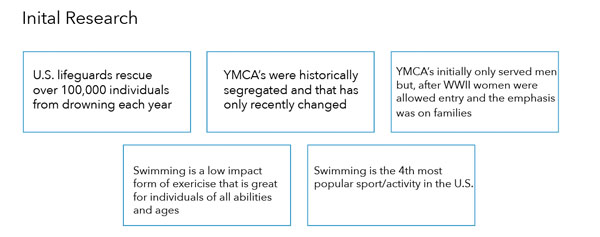
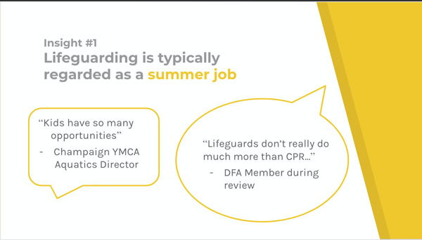
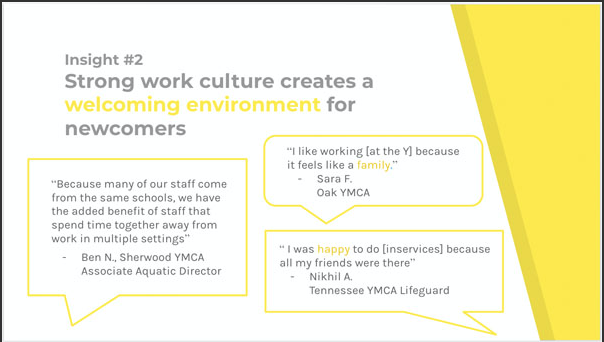
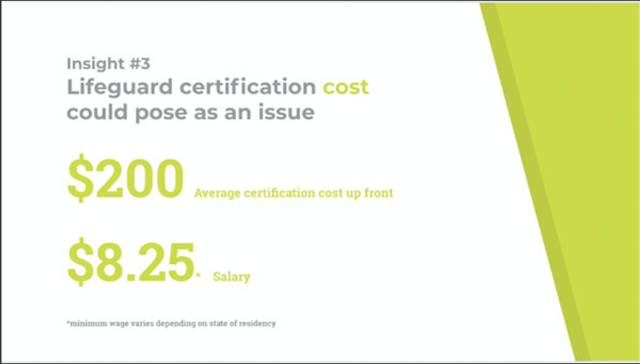
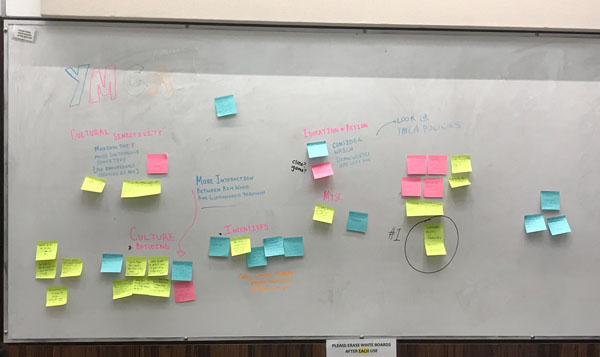
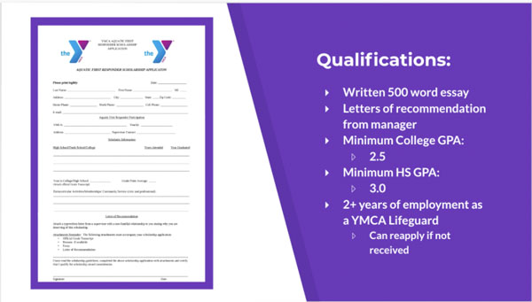
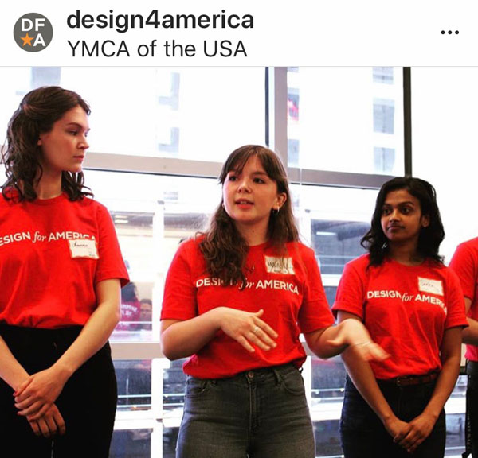
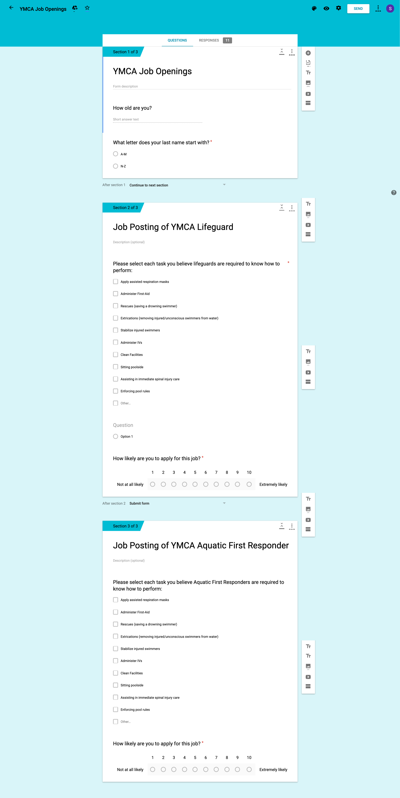

The Challenge
Pools nationwide are closing due to a shortage of lifeguards. People who use pools as a means to
improve/maintain their physical, mental, and social health are not able to.
My Design for America team and I partnered up with YMCA to address the recruitment and retention of lifeguards.
How can we enable YMCA staff to diversify and strengthen their applicant pool for YMCA aquatics programs?
Overview
Timeframe: Jan 2019-Apr 2019
My Role: Design Researcher
Team Members: 4 DFA Studio members from different disciplines
Methods: interviews, journey mapping, storytelling

Our initial research showed us the importance that lifeguards and pools have in regards to keeping swimmers safe. We also made sure to research the YMCA's history in regards to diversity since that was a main focus point in our how can we statement.
Interviews
Here are the main findings from interviews that we conducted
YMCA Executive
Another team member and I went on a site visit to a YMCA in order to meet the executive who oversees the aquatics program.
- Current recruiting methods of posting on Facebook and physical job boards is not working
- The YMCA Leadership feels it is an inclusive space, but they are not really sure how others feel
- Lifeguards consistently call off and there is no consistency with discipline
Prejudice and Discrimination Expert
interviewing this expert allowed us to focus on the diversity aspect of our how can we statement
- This expert advised us to check the organizations policies for microaggressions
- "Leaders can have the best possible intentions, but their lack of knowledge can harm other people anyway"
- Diversity is beneficial because it means a wider customer base and helps leaders make better decisions for all
YMCA Lifeguard from Tennessee
- Really enjoyed lifeguarding experience because of good manager and fun co-workers
- The manager "showed she cared for us and was also really on top of enforcing the rules"
- A strong sense of teamwork was built through spending time together outside of work
Synthesis
My other teammates had conducted interviews with another YMCA executive and we had about 8 interviews with past and current lifeguards. We had a few meetings where we synthesized our research to find insights.



Ideation
Next we ideated some potential solution. The picture below was from when we were coming up with ideas based on our insights. Solutions fell into different clusters such as cultural sensitivity, incentives, and education+action.

Prototypes
Rebranding

Lifeguarding is a very demanding job due to the pressure of not only protecting swimmers, but also anyone using the YMCA. For example, if an individual running on the treadmill slips and hurts their back a lifeguard is immediately called to administer first aid before paramedics arrive. We believe the rebranding to "Aquatic First Responder" will better represent the seriousness and skill required to be a lifeguard. We also wanted to make sure were appealing to a diverse set of people. The poster on the left captures people of different races and genders because we want individuals viewing the poster to see themselves in the role of aquatic first responder.
Scholarship

We noticed that current lifeguards do not have many incentives to continue working at their local pool. Offering lifeguards who have worked for 2+ years a chance to apply for a significant scholarship towards higher education may provide them a strong incentive to continuously work at their respective YMCA's.
Storytelling
We decided the best way to present our prototypes and solutions to YMCA Nationals would be to tell two parallel stories. Follow Maria's journey as a lifeguard and Eddie's as an aquatic first responder!

Eddie chooses to continue working as an aquatic first responder because he feels pride in his job. He also receives a scholarship to college and in the final slide you can see Eddie as nurse because his work as an aquatic first responder guided him towards the medical field. Maria on the other hand does not want to continue working as a lifeguard and quickly loses interest due to lack of compensation and incentives.

Testing
We decided to test our ideas through directly speaking with lifeguards to see what they thought and by sending out a survey to see how individuals respond to aquatic first responder vs lifeguard. For the survey, we divided up participants by their last name. One group was asked to match skills to "lifeguard" and the other to match skills to "aquatic first responder".
